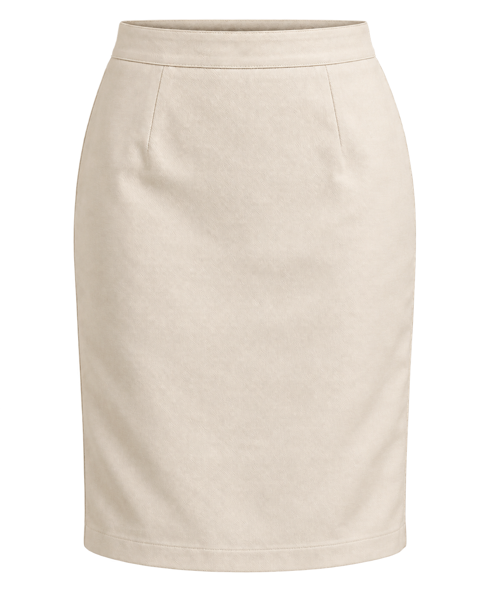
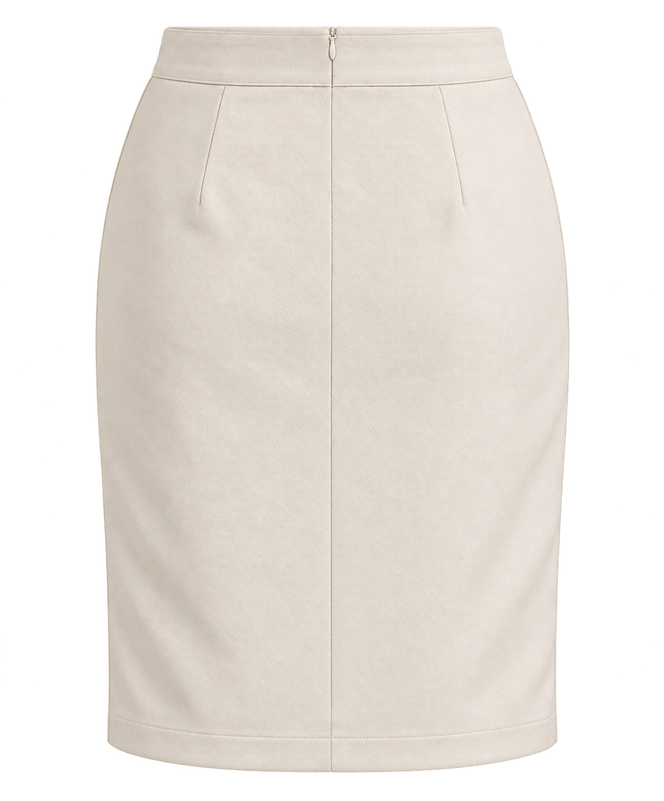
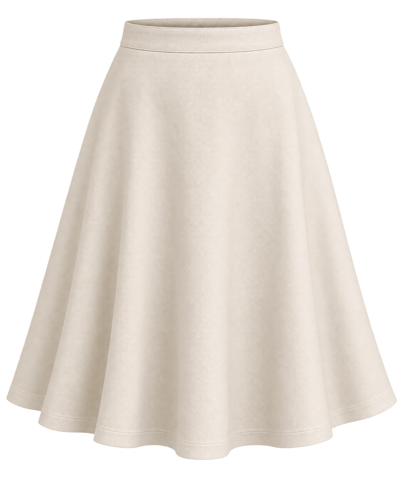
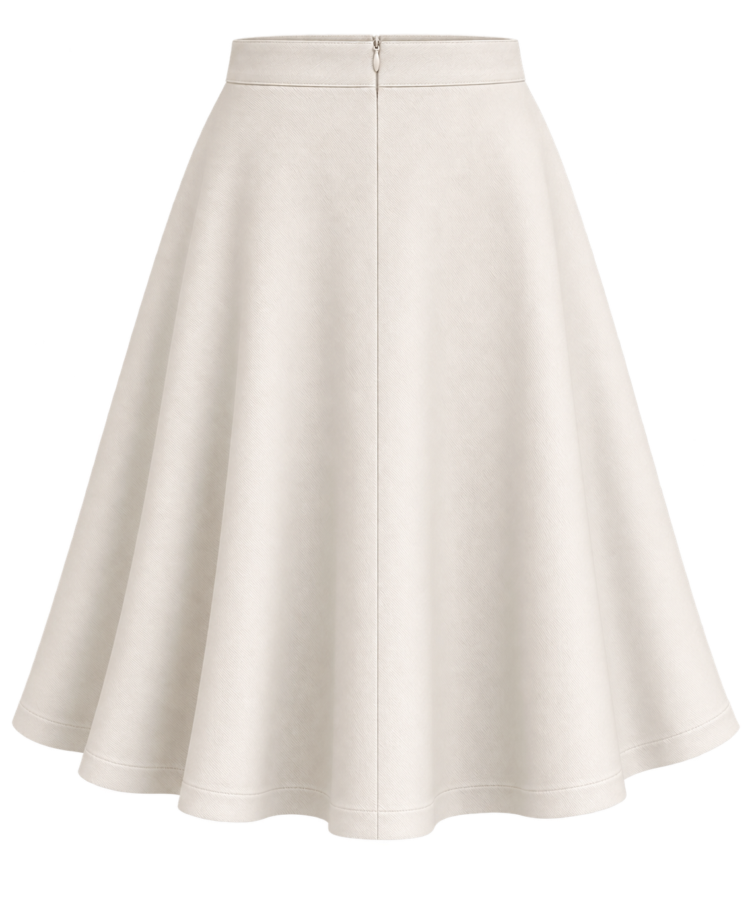

Создайте свою выкройку
Выберите категорию, затем модель. Доступны комплекты прямой юбки и полусолнца, а также неполное построение классических брюк.
Выберите модель
МОДЕЛЬПрямая юбка




Здесь можно оценить внешний вид и шаги программы. Физически точные лекала будут доступны после проверки построения по инструкции.
Введите мерки
Прямая юбка · сантиметры
Введите полные обхваты в сантиметрах. Значения примера можно менять.
Снимайте мерки в белье, в котором будете носить изделие, или в тонкой прилегающей одежде. Сохраняйте обычную осанку. Лента плотно касается тела, но не стягивает. Лучше работать с помощником.
Фигура человека
см
Без обуви: от пола до макушки
см
Через выступающие точки груди и лопаток
см
Лента проходит по линии талии
см
По наиболее выступающим точкам
Для выбранной юбки
см
От талии до уровня выступающих точек ягодиц
см
От талии до желаемого низа
Материал и посадка
Для первой основы проверяется ткань без растяжения
Выбор зависит от материала и желаемой посадки; проверка на макете обязательна
Для точной посадки потребуются также баланс, особенности фигуры и примерка. Эта версия показывает интерфейс и контрольный расчёт.
Прямая юбка · комплект деталей
Чертёж и PDF используют одни детали: перед на сгиб, спинка на две зеркальные детали и притачной пояс. Шлица и припуски входят в комплект по выбранным настройкам. Для проверки посадки нужен пробный макет.
Контрольный расчёт
Материал
Прибавка по бёдрам к полуобхвату
Ширина по бёдрам, половина изделия
Ширина по талии, половина изделия
Суммарное приталивание
Вытачки по примеру книги
По инструкции. Прибавка по бёдрам выбирается в диапазоне 1–2 см на половину изделия; по талии здесь 1 см. Распределение вытачек требует проверки для конкретной фигуры.
Заметки после примерки
Заметки сохраняются в этом браузере и включаются в файл проекта. Они пока не меняют чертёж.
Перед раскроем проверьте посадку
Рабочий чертёж → пробный макет → исправленное лекало.
На макете проверьте линию талии и бёдер, вертикальность бокового шва, длину переда и спинки, свободу движения. Отметьте исправления и перенесите их в выкройку. Сохранение таких правок будет добавлено позже.
На макете проверьте линию талии и бёдер, вертикальность бокового шва, длину переда и спинки, свободу движения. Отметьте исправления и перенесите их в выкройку. Сохранение таких правок будет добавлено позже.
Сохранить и распечатать
Векторный PDF комплекта в масштабе 1:1. Выберите формат, затем скачайте файл или откройте его для печати.
В PDF войдут перед на сгиб, шаблон двух зеркальных деталей спинки, пояс, шлица и припуски по вашим настройкам.
Печатайте строго 100%, без «вписать в страницу». Сначала измерьте квадрат 100 × 100 мм на бумаге и проверьте посадку на пробном макете.
Формат страницы
Номера R/C обозначают ряд и колонку. При большом комплекте A0 тоже разбивается на несколько листов.
Комплект формируется по текущим меркам и настройкам.